JCEF开发实例
Java Chromium嵌入式框架（JCEF）。 一个简单的框架，用于使用Java编程语言在其他应用程序中嵌入基于Chromium的浏览器
JCEF项目地址：https://bitbucket.org/chromiumembedded/java-cef/src/master/
我使用JCEF是为了用它开发自己的桌面应用程序。相对于vc,vb,swing这些，使用浏览器外壳，利用网络上众多流行的Web UI开源框架（如Easyui）做界面无疑是最快的，这可以让我们有更多的时间去实现业务逻辑，而不用被那些该死的UI控件折磨。想一想，原先做个表格，一整套界面做完大半天过去了，现在，引入JS、CSS，一瞬间做出一个高大上的界面，效率不言而喻。
初次接触JCEF，光是编译就花了一天时间。接着发现在网上找不到什么中文资料，利用空闲时间靠不断的网络搜索加翻译英文帮助文档了解它。断断续续到现在，终于做出了自己想要的软件。
特意写这系列文章来给想学习JCEF的同学引路，也开源了自己的个人项目供大家参考：PowerOfLongedJcef
你渴望力量吗？JCEF==力量！
JCEF帮助文档在线地址【含中文翻译】：http://www.xuanyimao.com/jcef/doc/index.html（文档在百度网盘有）
关于翻译：前半部分使用翻译软件，后面的自己写了个程序自动翻译进去的，部分修正过，基本上没大问题，对照英文可以看懂（没办法，手动太累）
JCEF帮助文档【含中文翻译】、JCEF帮助文档原文件【html】、JCEF win64相关编译文件（其他版本请自行编译）下载地址：https://pan.baidu.com/s/1C7NyoNWEc7sph7GvZ1oaqg 提取码：hfk2
个人使用心得
优点：很强大，和谷歌浏览器差不多。
缺点：
1.JS调用java代码的方式让人很不习惯，可能是我没找到更好的方法，执行java方法得到的结果是通过回调得到，意味着var a=test();这样的语句得写成
var a;
window.test({
...
onSuccess:function(response){
a=response;
...
}
});
2.我目前没找到方法监听response返回的数据，这意味着类似获取url返回数据的操作很难实现，虽然可以通过脚本注入的方式，不过那样太麻烦
3.打开淘宝这样的网站容易卡死，这让我有时想放弃它(也可能是我代码有问题，哈哈)。不过我更期待它未来的版本会更加流畅，至少我感觉它是免费的里面的最牛的。
4.进很多视频网站不但卡，还播放不了。所以，不建议用它来开发浏览器。
为什么要使用JCEF？
因为强大，免费开源。如果资金宽裕，可以考虑JxBrowser，个人感觉不错，但是因为没钱，放弃了。有兴趣的可以去申请个免费的许可证，体验下JxBrowser。
吐槽：编译JCEF的诸多软件安装实在是让人受不了，这或许是很多人望而却步的原因。软件安装好了编译不一定成功，软件版本不对也可能编译不成功，出了问题很难搜到答案，还好我在砸电脑之前编译成功了。编译完之后，C盘变成了红色。
开源项目：
PowerOfLongedJcef【注：本项目在win10 64位系统上开发，不保证其他系统可以直接运行】
github：https://github.com/lieyanfeimao/PowerOfLongedJcef.git
码云：https://gitee.com/edadmin/PowerOfLongedJcef.git
采用JCEF+Easyui设计，内含功能：代码模板生成器、脚本管理、中文帮助文档、简单的脚本注入示例等【百度自动搜索（弹出对话框输入一句话，程序自动填充搜索框，点击搜索按钮），简单的自动注入】，需要JDK1.8。后续可能会增加新功能。
工作繁重，学习不止，不接受任何形式的问题解答，不帮忙编译JCEF其他版本，请理解，谢谢！【有问题请自行对照文档和demo找解决方案或百度谷歌或自己想办法】——玄翼猫，http://www.xuanyimao.com
如果需要自己编译JCEF，可参考以下文档。
虽然是英文的，但是并不难看懂，实在看不懂，在谷歌浏览器右键，选择“翻译成中文”
windows下编译需安装软件（请以自己的机机型号和最新的文档为准）【我的是Win10】
Cmake 2.8.12.2或更新版本（建议配置环境变量，在Path下加入Cmake的bin目录路径）
Git
JDK 1.7或1.8，我用的1.8。
Python 2.6以上的版本，不支持版本号为3的
Visual studio 2015。安装时别默认，默认不安装Visual C++，勾选"Visual C++"和"通用windows开发工具"下的"tools和Windows 10 SDK"安装。
PS：还得准备个VPN，Cmake编译时需要下载国外的资源
软件装好了，一般不会有什么问题。用到的软件均可在此地址获取：https://pan.baidu.com/s/1C7NyoNWEc7sph7GvZ1oaqg 提取码：hfk2
注意的地方：
1.win10配置java环境变量 Path 需要用完整的路径，不能用 %JAVA_HOME%，不用完整路径会导致javac用不了
2.python安装好以后需要在环境变量 Path 配置安装路径
3.网上说VS2015安装时最好是用默认路径，我没去测试装其他盘有什么影响，投其所好吧。
以上两点不影响编译，VS没装好会影响cmake编译。
有个小坑，我用阿里云的windows服务器编译卡在了系统版本那一步，最后放弃了。所以不建议使用云服务器。
在磁盘下新建一个jcef目录（名字随便取），使用cmd命令行进入此目录
下载jcef工程，建议用git下载下来，Cmake脚本中含有和git相关的代码，从其他地方拷贝过来可能会编译Cmake失败
git clone https://bitbucket.org/chromiumembedded/java-cef.git src
项目下载完之后，进入src目录，打开CMakeLists.txt，把从message(STATUS "Downloading clang-format from Google Storage...")开始的这一块代码给注释了。clang-format这玩意不需要用到，下载很耗时间。
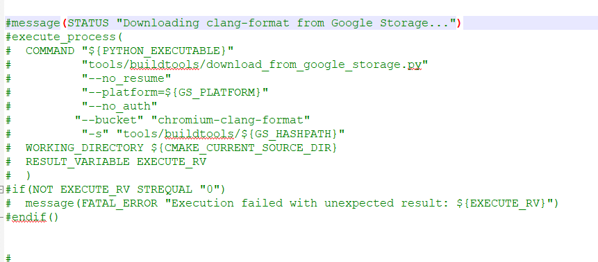
cmd命令行进入src目录
cd src
创建jcef_build目录，不要使用其他名字
mkdir jcef_build && cd jcef_build
执行cmake操作，可以使用Cmake bin目录下的 cmake-gui来操作
cmake -G "Visual Studio 14 Win64" ..
cmake完成后，jcef_build目录下会生成vs项目。双击jcef.sln打开工程，设置为Release和x64,点击菜单项“生成”>“生成解决方案”，等待编译完成
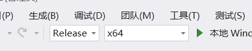
cmd命令行进入src/tools目录下，执行命令
compile.bat win64
编译完成后，使用以下命令测试是否成功，出现浏览器窗口表示成功了。
run.bat win64 Release detailed
执行脚本，生成项目需要用到的文件，文件生成在 src\binary_distrib\win64\bin\lib 目录下
make_distrib.bat win64
岁在甲子，天下大吉！
如果自己没有编译后的JCEF文件，可下载本站提供的编译文件：自己翻到上面去找百度网盘链接
本示例教程开源项目地址：
github：https://github.com/lieyanfeimao/JcefTest.git
码云：https://gitee.com/edadmin/JcefTest.git
首先，打开世界上最好的开发工具eclipse，新建普通java工程。工程编码建议设置为UTF-8
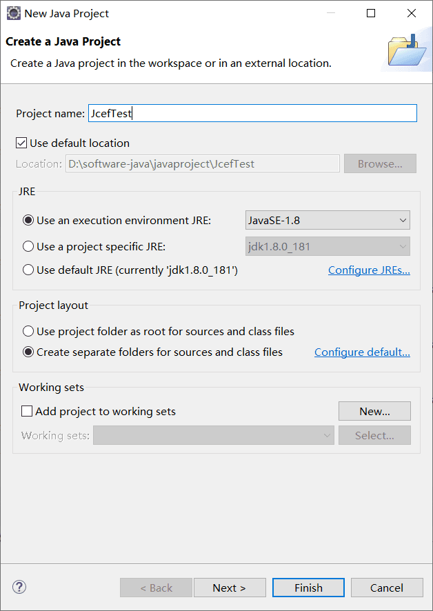
新建lib目录，引入所需jar包，Add to build path
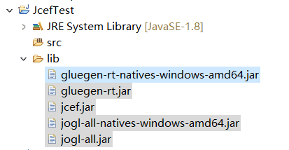
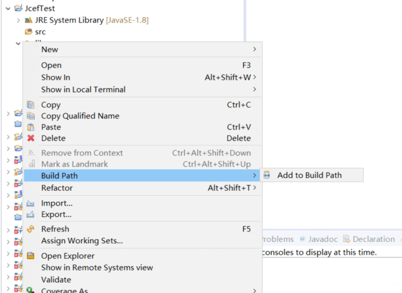
项目>Properties(属性)>Java Build Path，展开Jdk，选中Native library location，点击Edit，选择JCEF的二进制文件目录
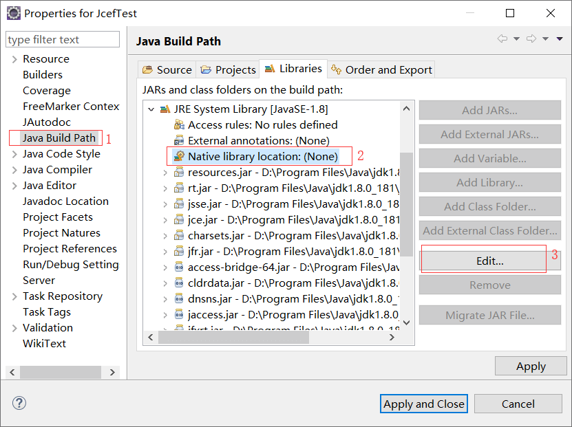
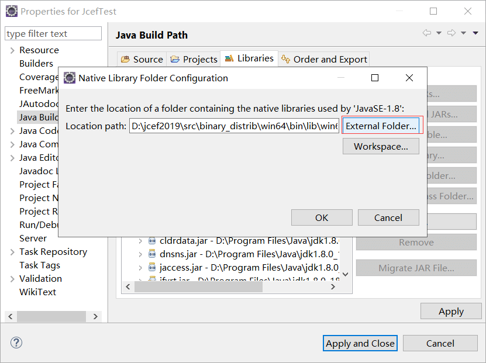
使用世界上最好的开发语言编写测试类，运行。
public class TestFrame extends JFrame{
/**
*
*/
private static final long serialVersionUID = -7410082787754606408L;
public static void main(String[] args) {
new TestFrame();
}
public TestFrame() {
//是否Linux系统
boolean useOSR=OS.isLinux();
//是否透明
boolean isTransparent=false;
//添加Handler，在CEFAPP状态为终止时退出程序
CefApp.addAppHandler(new CefAppHandlerAdapter(null) {
@Override
public void stateHasChanged(org.cef.CefApp.CefAppState state) {
// Shutdown the app if the native CEF part is terminated
if (state == CefAppState.TERMINATED) System.exit(0);
}
});
CefSettings settings = new CefSettings();
settings.windowless_rendering_enabled = useOSR;
//获取CefApp实例
CefApp cefApp=CefApp.getInstance(settings);
//创建客户端实例
CefClient cefClient = cefApp.createClient();
//创建浏览器实例
CefBrowser cefBrowser = cefClient.createBrowser("http://www.baidu.com", useOSR, isTransparent);
//将浏览器UI添加到窗口中
getContentPane().add(cefBrowser.getUIComponent(), BorderLayout.CENTER);
pack();
setTitle("测试JCEF打开百度");
setSize(800, 600);
setVisible(true);
//添加一个窗口关闭监听事件
addWindowListener(new WindowAdapter() {
@Override
public void windowClosing(WindowEvent e) {
CefApp.getInstance().dispose();
dispose();
}
});
}
}
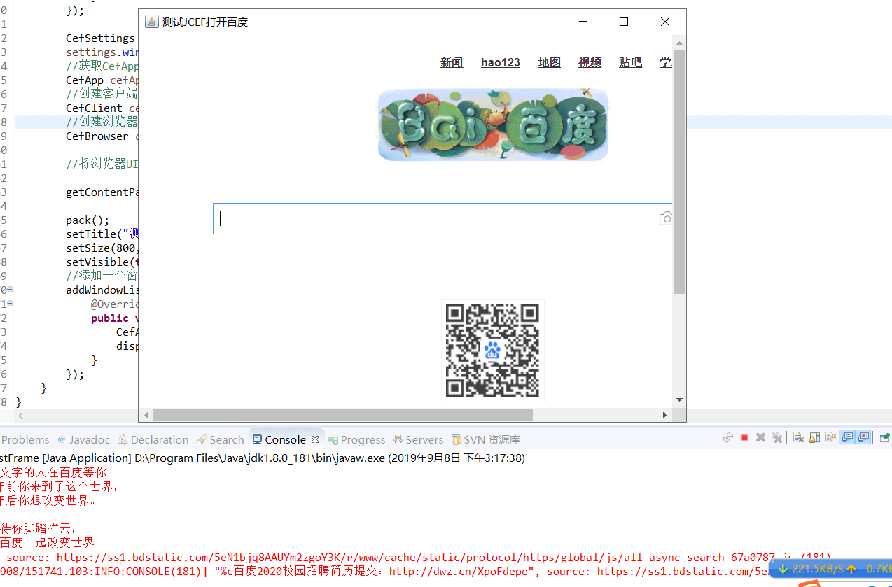
实现JS与JAVA代码交互，是做应用所必须的一步。通过JS调用JAVA代码，实现一切JAVA代码能实现的东西。可查阅 org.cef.browser.CefMessageRouter类的文档。
因为是异步方式，要获取java代码的处理结果，需要在回调处理结果。我不喜欢目前这种形式的调用。如果和JAVA代码交互步骤很多，JS代码会一层套一层，很不雅观。
JAVA代码实现
public class JsTestFrame extends JFrame{
/**
*
*/
private static final long serialVersionUID = -9131822589633996915L;
public static void main(String[] args) {
String url=System.getProperty("user.dir")+"/jstest.html";
new JsTestFrame(url);
}
public JsTestFrame(String url) {
//是否Linux系统
boolean useOSR=OS.isLinux();
//是否透明
boolean isTransparent=false;
//添加Handler，在CEFAPP状态为终止时退出程序
CefApp.addAppHandler(new CefAppHandlerAdapter(null) {
@Override
public void stateHasChanged(org.cef.CefApp.CefAppState state) {
// Shutdown the app if the native CEF part is terminated
if (state == CefAppState.TERMINATED) System.exit(0);
}
});
CefSettings settings = new CefSettings();
settings.windowless_rendering_enabled = useOSR;
//获取CefApp实例
CefApp cefApp=CefApp.getInstance(settings);
//创建客户端实例
CefClient cefClient = cefApp.createClient();
//添加一个JS交互
jsActive(cefClient);
//创建浏览器实例
CefBrowser cefBrowser = cefClient.createBrowser(url, useOSR, isTransparent);
//将浏览器UI添加到窗口中
getContentPane().add(cefBrowser.getUIComponent(), BorderLayout.CENTER);
pack();
setTitle("测试JCEF-JS与JAVA代码交互");
setSize(800, 600);
setVisible(true);
//添加一个窗口关闭监听事件
addWindowListener(new WindowAdapter() {
@Override
public void windowClosing(WindowEvent e) {
CefApp.getInstance().dispose();
dispose();
}
});
}
/**
* 添加js交互
* @author:liuming
*/
public void jsActive(CefClient client) {
//配置一个查询路由,html页面可使用 window.java({}) 和 window.javaCancel({}) 来调用此方法
CefMessageRouterConfig cmrc=new CefMessageRouterConfig("java","javaCancel");
//创建查询路由
CefMessageRouter cmr=CefMessageRouter.create(cmrc);
cmr.addHandler(new CefMessageRouterHandler() {
@Override
public void setNativeRef(String str, long val) {
System.out.println(str+" "+val);
}
@Override
public long getNativeRef(String str) {
System.out.println(str);
return 0;
}
@Override
public void onQueryCanceled(CefBrowser browser, CefFrame frame, long query_id) {
System.out.println("取消查询:"+query_id);
}
@Override
public boolean onQuery(CefBrowser browser, CefFrame frame, long query_id, String request, boolean persistent,
CefQueryCallback callback) {
System.out.println("request:"+request+"\nquery_id:"+query_id+"\npersistent:"+persistent);
callback.success("Java后台处理了数据");
return true;
}
}, true);
client.addMessageRouter(cmr);
}
}
html实现，在工程根目录新建 jstest.html
<!DOCTYPE html>
<html>
<head>
<title>JCEF帮助文档</title>
<meta charset="utf-8">
<meta name="renderer" content="webkit">
<meta http-equiv="X-UA-Compatible" content="IE=edge">
<meta name="viewport" content="width=device-width, initial-scale=1">
</head>
<body>
<a href="javascript:testToJava()">测试与java代码交互</a>
</body>
<script>
function testToJava(){
window.java({
request: '发送给JAVA的数据',
persistent:false,
onSuccess: function(response) {
alert("返回的数据:"+response);
},
onFailure: function(error_code, error_message) {}
});
}
</script>
<!-- author:玄翼猫 -->
</html>
可参考JCEF官方的demo
您也可以参考 PowerOfLongedJcef 中通过反射+注解的实现方式
当我们点击target值为_blank的链接时，JCEF默认以弹出窗口的形式打开新页面，要实现tab栏形式，可参考以下步骤
1.创建一个实现CefLifeSpanHandlerAdapter的类，重写onBeforePopup方法：根据url创建一个CefBrowser对象，将CefBrowser的UI组件设置到JTabbedPane
2.设置onBeforePopup方法的返回值为true，取消弹出窗口
注意：因为JTabbedPane默认没有关闭按钮，需要自己使用JPanel之类的组件实现
设计思路：打开新窗口时，在JTabbedPane里新建一个Tab，利用CefClient创建一个CefBrowser对象，并将CefBrowser的UI添加到Tab，显示新创建的Tab
JTabbedPane默认没有关闭按钮，我们自定义一个JPanel来实现标题栏和关闭按钮。JPanel包含两个JLabel标题，一个显示页面标题，一个显示“X”。为“X”添加单击事件监听器，当点击“X”时，销毁Tab关联的CefBrowser对象，移除Tab
这里先写一个实体类，用来保存Tab关闭时要用到的数据
TabBrowser
public class TabBrowser {
/**索引，与关闭按钮关联*/
private int index;
/**浏览器对象*/
private CefBrowser browser;
/**浏览器标题*/
private JLabel title;
/**
* 获取 索引，与关闭按钮关联
* @return index
*/
public int getIndex() {
return index;
}
/**
* 设置 索引，与关闭按钮关联
* @param index 索引，与关闭按钮关联
*/
public void setIndex(int index) {
this.index = index;
}
/**
* 获取浏览器对象
* @return browser
*/
public CefBrowser getBrowser() {
return browser;
}
/**
* 设置 浏览器对象
* @param browser browser
*/
public void setBrowser(CefBrowser browser) {
this.browser = browser;
}
/**
* 设置浏览器标题
* @return title
*/
public JLabel getTitle() {
return title;
}
/**
* 设置 浏览器标题
* @param title 浏览器标题
*/
public void setTitle(JLabel title) {
this.title = title;
}
/**
* @param index
* @param browser
* @param title
*/
public TabBrowser(int index, CefBrowser browser, JLabel title) {
super();
this.index = index;
this.browser = browser;
this.title = title;
}
}
创建一个处理标题更新的Handler
DisplayHandler
public class DisplayHandler extends CefDisplayHandlerAdapter {
private TabbedPaneTestFrame frame;
public DisplayHandler(TabbedPaneTestFrame frame) {
this.frame=frame;
}
/* (non-Javadoc)
* @see org.cef.handler.CefDisplayHandlerAdapter#onTitleChange(org.cef.browser.CefBrowser, java.lang.String)
*/
@Override
public void onTitleChange(CefBrowser browser, String title) {
this.frame.updateTabTitle(browser, title);
// super.onTitleChange(arg0, arg1);
}
}
创建一个处理弹出窗口的Handler
LifeSpanHandler
public class LifeSpanHandler extends CefLifeSpanHandlerAdapter {
private TabbedPaneTestFrame frame;
public LifeSpanHandler(TabbedPaneTestFrame frame) {
this.frame=frame;
}
/* (non-Javadoc)
* @see org.cef.handler.CefLifeSpanHandlerAdapter#onBeforePopup(org.cef.browser.CefBrowser, org.cef.browser.CefFrame, java.lang.String, java.lang.String)
*/
@Override
public boolean onBeforePopup(CefBrowser browser, CefFrame frame, String target_url, String target_frame_name) {
this.frame.createBrowser(target_url);
//返回true表示取消弹出窗口
return true;
}
}
创建一个点击关闭按钮的监听器
TabCloseListener
public class TabCloseListener implements MouseListener{
private int index;
private TabbedPaneTestFrame frame;
public TabCloseListener(int index,TabbedPaneTestFrame frame) {
this.index=index;
this.frame=frame;
}
/* (non-Javadoc)
* @see java.awt.event.MouseListener#mouseClicked(java.awt.event.MouseEvent)
*/
@Override
public void mouseClicked(MouseEvent e) {
// TODO Auto-generated method stub
System.out.println("点击了关闭事件...");
frame.removeTab(null, index);
}
/* (non-Javadoc)
* @see java.awt.event.MouseListener#mousePressed(java.awt.event.MouseEvent)
*/
@Override
public void mousePressed(MouseEvent e) {
// TODO Auto-generated method stub
}
/* (non-Javadoc)
* @see java.awt.event.MouseListener#mouseReleased(java.awt.event.MouseEvent)
*/
@Override
public void mouseReleased(MouseEvent e) {
// TODO Auto-generated method stub
}
/* (non-Javadoc)
* @see java.awt.event.MouseListener#mouseEntered(java.awt.event.MouseEvent)
*/
@Override
public void mouseEntered(MouseEvent e) {
// TODO Auto-generated method stub
}
/* (non-Javadoc)
* @see java.awt.event.MouseListener#mouseExited(java.awt.event.MouseEvent)
*/
@Override
public void mouseExited(MouseEvent e) {
// TODO Auto-generated method stub
}
}
主类代码
TabbedPaneTestFrame
public class TabbedPaneTestFrame extends JFrame{
/**
*
*/
private static final long serialVersionUID = 871314861019393323L;
private static CefApp cefApp;
private static CefClient cefClient;
private boolean useOSR;
private boolean isTransparent;
/**tabbedPane对象*/
private static JTabbedPane tabbedPane;
/**TabBrowser对象列表**/
private List<TabBrowser> tbList=new Vector<TabBrowser>();
/**tab使用的索引。此索引不是tab在tabbedpane中的索引，此索引用来移除tab栏**/
private int tbIndex=0;
/**默认的标题名*/
private final static String TITLE_INFO="正在载入...";
public TabbedPaneTestFrame(String url) {
//是否Linux系统
useOSR=OS.isLinux();
//是否透明
isTransparent=false;
//添加Handler，在CEFAPP状态为终止时退出程序
CefApp.addAppHandler(new CefAppHandlerAdapter(null) {
@Override
public void stateHasChanged(org.cef.CefApp.CefAppState state) {
// Shutdown the app if the native CEF part is terminated
if (state == CefAppState.TERMINATED) System.exit(0);
}
});
CefSettings settings = new CefSettings();
settings.windowless_rendering_enabled = useOSR;
//获取CefApp实例
cefApp=CefApp.getInstance(settings);
//创建客户端实例
cefClient = cefApp.createClient();
//添加鼠标右键菜单handler
cefClient.addContextMenuHandler(new MenuHandler());
//添加浏览器标题更改handler
cefClient.addDisplayHandler(new DisplayHandler(this));
//添加浏览器窗口弹出handler
cefClient.addLifeSpanHandler(new LifeSpanHandler(this));
tabbedPane=new JTabbedPane(JTabbedPane.TOP,JTabbedPane.SCROLL_TAB_LAYOUT);
getContentPane().add(tabbedPane, BorderLayout.CENTER);
pack();
setTitle("测试JCEF-Tab栏");
setSize(800, 600);
setVisible(true);
//添加一个窗口关闭监听事件
addWindowListener(new WindowAdapter() {
@Override
public void windowClosing(WindowEvent e) {
closeAllBrowser();
CefApp.getInstance().dispose();
dispose();
}
});
createBrowser("http://www.baidu.com");
}
/**
* 关闭所有浏览器
* @author:liuming
*/
public void closeAllBrowser() {
for(int i=tbList.size()-1;i>=0;i--) {
TabBrowser tb=tbList.get(i);
tb.getBrowser().close(true);
tabbedPane.removeTabAt(i);
System.out.println("移除索引为"+i+"的tab...");
}
}
/**
* 根据url创建一个新的tab页
* @author:liuming
* @param url
* @return 最后一个tab的索引
*/
public int createBrowser(String url) {
CefBrowser browser = cefClient.createBrowser(url, useOSR, isTransparent);
tabbedPane.addTab(".", browser.getUIComponent());
int lastIndex=tabbedPane.getTabCount()-1;
tbIndex++;
//创建自定义tab栏
JPanel jp=new JPanel();
JLabel ltitle=new JLabel(TITLE_INFO);
JLabel lclose=new JLabel("X");
jp.setOpaque(false);
ltitle.setHorizontalAlignment(JLabel.LEFT);
lclose.setHorizontalAlignment(JLabel.RIGHT);
jp.add(ltitle);
jp.add(lclose);
//添加关闭按钮监听事件
lclose.addMouseListener(new TabCloseListener(tbIndex,this));
//设置tab栏标题的关键句
tabbedPane.setTabComponentAt(lastIndex, jp);
TabBrowser tb=new TabBrowser(tbIndex, browser, ltitle);
tbList.add(tb);
tabbedPane.setSelectedIndex(lastIndex);
return lastIndex;
}
/**
* 修改标题
* @author:liuming
* @param browser
* @param title
*/
public void updateTabTitle(CefBrowser browser,String title) {
if(title!=null && !"".equals(title)) {
if(title.length()>12) title=title.substring(0, 12)+"...";
for(TabBrowser tb:tbList) {
if(tb.getBrowser()==browser) {
tb.getTitle().setText(title);
break;
}
}
}
}
/**
* 移除tab
* @author:liuming
* @param browser
* @param index
*/
public void removeTab(CefBrowser browser,int index) {
if(browser!=null) {
for(int i=0;i<tbList.size();i++) {
TabBrowser tb=tbList.get(i);
if(tb.getBrowser()==browser) {
tb.getBrowser().close(true);
tabbedPane.removeTabAt(i);
tbList.remove(i);
// System.out.println("移除索引为"+i+"的tab");
break;
}
}
}else {
for(int i=0;i<tbList.size();i++) {
TabBrowser tb=tbList.get(i);
if(tb.getIndex()==index) {
tb.getBrowser().close(true);
tabbedPane.removeTabAt(i);
tbList.remove(i);
// System.out.println("移除索引为"+i+"的tab");
break;
}
}
}
}
public static void main(String[] args) {
new TabbedPaneTestFrame("http://www.baidu.com");
}
}
JCEF主要有这些类：CefApp、CefClient、CefBrowser、CefFrame、handler、callback。可根据需要查阅文档。
CefApp
CEF程序的全局管理类
CefClient
CEF客户端程序类
CefBrowser
浏览器对象类，一个客户端会有多个浏览器
CefFrame
框架对象，一个浏览器可能会包含多个Frame
handler
使用比较频繁的类，类似于监听器。比如说自定义右键菜单。Adapter相关类是handler的实现类
callback
回调接口
misc包下是实体类。network是网络相关的类，例如Cookie管理
注：仅适用于谷歌浏览器
1.获取页面鼠标单击事件调用的js。以下使用我自己的项目做示例，查找"编辑"按钮对应的JS
F12进入开发者工具，选择sources
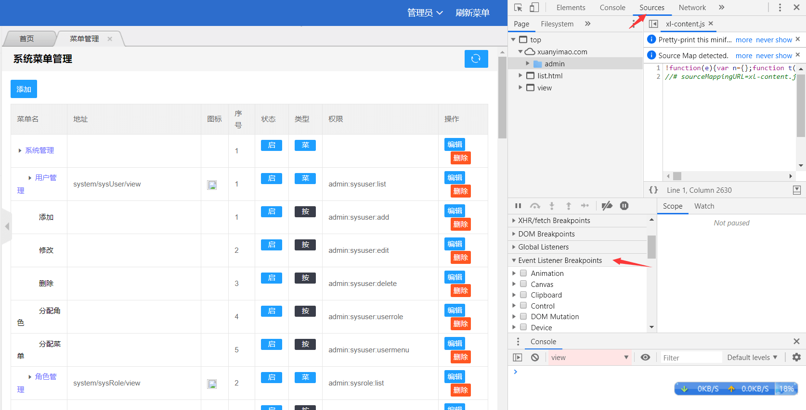
展开 Event Listener Breakpoints，选中Mouse下的click，单击页面元素
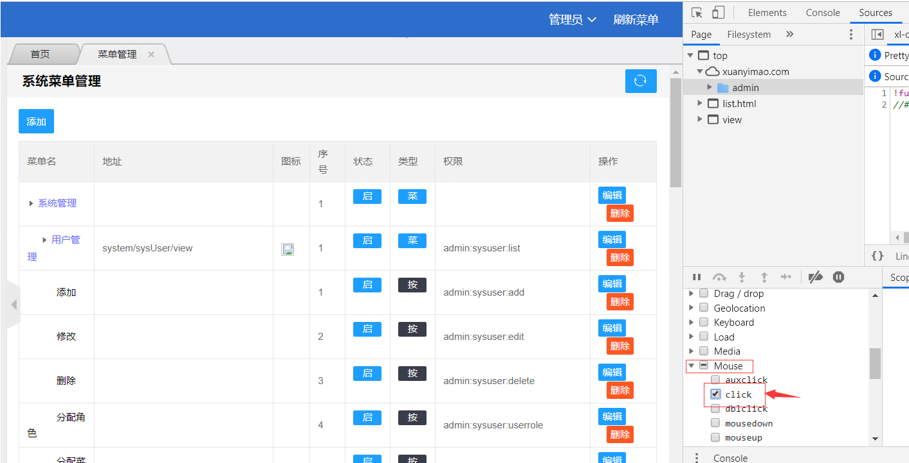
按F11往下追踪，直到找到自己需要的js
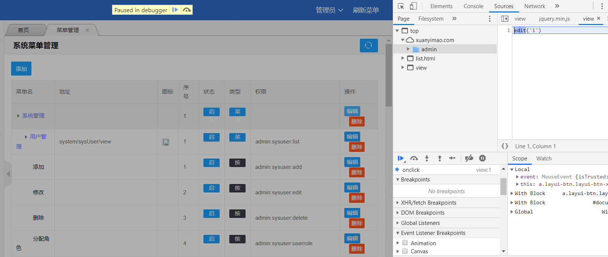
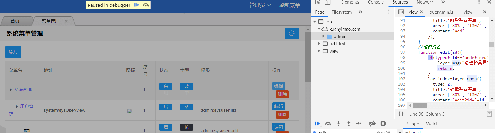
找到js后，可以将js代码复制出来，封装成一个函数，再以脚本注入的方式注入到页面，调用该函数
2.调用指定元素的单击事件
在开发者工具下，用箭头找到指定元素，分析元素的id，class之类的信息，调用单击事件
示例：document.getElementById("xx").click();
建议：尽量使用原生js的方式调用
PowerOfLongedJCEF是一个不成熟的JCEF开源项目，在一些方面我自认为不够方便，不过现在已经可以满足我的大部分要求。我也不知道会不会继续维护它，如果有空闲时间的话——可能会吧。
如果你想使用JCEF开发自己的应用，你可以参考JCEF的帮助文档和JcefTest项目，你也可以参考PowerOfLongedJCEF或者直接使用PowerOfLongedJCEF，在某些方面，PowerOfLongedJCEF还是让人比较满意的。
JAVA桌面应用项目有个通病，需要先装一个JDK（有些应用对于JDK有位数和版本要求），再加上自身丑陋的界面，以至于很少能看到JAVA桌面项目。
POLJ继承了这些特性，它还有一个特性——庞大，一百多M。有一百多M来自于Jcef二进制文件，它的实际代码量可能就几百K。
使用git或者svn以“普通JAVA项目”模式将PowerOfLongedJCEF导入eclipse。参照 工程导入说明.txt 引入相关的包
找到com.xuanyimao.polj下的StartupApp ，Run as > Java Application ,启动项目。如图。
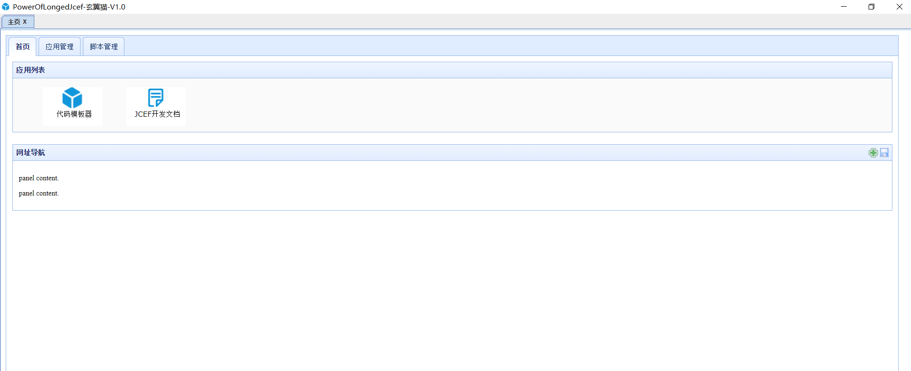
项目目录介绍：
src：JAVA代码目录
app：HTML文件存放目录，可以理解为应用目录。各个应用的HTML部分应以单个目录的形式存放在这里。
bin：class文件目录
binary_win64：JCEF二进制文件目录
data：数据储存目录，以应用ID生成相应的目录。data数据以json格式数据储存，方便修改
lib：JAR包目录
scp：脚本文件目录，对应首页的脚本管理
项目启动流程：
1、读取项目根目录下的config文件，获取应用列表（如果不存在会自动创建）。
2、根据应用列表动态加载需要用到的Jar文件。应用启动时会自动引入一些jar文件，这里的是单个应用需要用到的Jar。
3、根据配置扫描包，加载相应的JS接口
4、启动主窗口程序
应用可以理解为模块——一个独立的功能，每个应用都有自己的ID，不同的应用ID不能相同。
创建一个JS与JAVA交互的接口
在com.xuanyimao.polj下面创建一个自己的包，比如：com.xuanyimao.polj.test，在下面继续创建一个jsimpl包：com.xuanyimao.polj.test.jsimpl。
新建一个普通JAVA类，加上注解 @JsClass ，创建一个方法，加上注解：@JsFunction(name="test1")。里面随便写一些代码。可参考各jsimpl包下的代码。
前台HTML页面引入 app\static\js\common.js，执行以下代码 execJava("test1",null,function(data){}); ，建议直接在index.html做测试。
common.js中的execJava函数弹层使用的是easyui，如果想换成其他ui，请参照该代码进行改写。
从StartupApp中可以看出，程序在启动时扫描了指定目录下的jsimpl包，如果你的应用想要用其他的包名，请在这里指定，或在打包成应用包的时候指定扫描的包名。
有时候你可能需要传List对象，很抱歉，不支持。不过你把它再次包成一个大对象就支持了。参考com.xuanyimao.polj.index.jsimpl.IndexJs的createInstallPkg方法
注解说明：
@JsClass 表示这个类是个JS接口类
@JsFunction 标明前台该如何调用这个JAVA方法，name属性是JS调用时使用的名称
@JsObject 可用此注解动态注入@JsClass的类对象，不建议使用，建议用：AnnotationScanner.getJsClassInstance(JsClass名)
代码相关说明：
因为PowerOfLongedJCEF的作者拥有良好的编码规范，几乎所有方法都有注释，所以，你可以尽情的研究源码。PowerOfLongedJCEF的核心代码都在com.xuanyimao.polj.index 下。
不要纳闷我为什么没有new MainFrame()，窗口却启动了。注解扫描器扫描时会自动实例化一个对象到内存中。它会被打开的原因就是因为注解扫描器扫描了它，而它有JsClass这个注解。
com.xuanyimao.polj.StartupApp
项目启动类，加载配置，扫描JS接口，启动窗口
com.xuanyimao.polj.index.MainFrame
主窗口类，从这里初始化CefManager数据
com.xuanyimao.polj.index.CefManager
JCEF对象管理类，和浏览器相关的事件都在里面，JS事件注册也在这里
com.xuanyimao.polj.index.scanner.AnnotationScanner
注解扫描器主类，扫描注解，执行JS和Java代码交互
com.xuanyimao.polj.index.bean.HandlerObject
这是JS和Java方法交互中的一个特殊对象，它包含了完整的原始交互信息。如果你在你方法的参数中使用了它，它会被自动注入。示例：com.xuanyimao.polj.index.jsimpl.CommonFunction中的fileDialog
com.xuanyimao.polj.index.util.ZipUtil
文件压缩工具类
com.xuanyimao.polj.index.util.ToolUtil
乱七八糟的工具类
脚本管理使用说明：
这里的脚本是指JS脚本。首先，将你的脚本放在scp目录下，在首页右键，选择“刷新”，这时，你新添加的脚本就会出现在脚本列表。
点击“编辑”，或在表格上双击，给脚本取个名字。点击“保存”。再次右键，在右键菜单“脚本注入”的子菜单便可看到你刚刚编辑的脚本。只有名称不为空的脚本才会出现在右键菜单上。
点击右键菜单上的脚本名，便会在当前页面执行该脚本。如果修改了脚本不想重启软件，请点击“重载脚本”以使新脚本生效。
脚本分为两种注入模式，0是默认的手动注入——以右键菜单方式启动。1是自动注入，自动注入是打开指定网页后自动执行此脚本，需要配置链接的正则表达式，当网页URL与配置的链接能匹配上时，自动注入脚本。
应用管理说明：
目前来说，这是一个鸡肋的功能。看源码可以知道，它仅仅是将指定的文件和配置文件生成一个zip压缩包——应用安装包，安装时也只是根据配置文件把这些文件复制到指定目录。对于那些不需要和JAVA做交互的应用来说还勉强，一旦和JAVA有交互，基本上嗝屁。将就着用吧。
添加应用：可以删掉项目下的config文件，在 DevRepertory.createDefaultAppConfig() 里面加代码，简单方便。
题外话：JAVA有很多第三方库高版本不支持低版本，很容易造成版本冲突之类。所以，想做任意插拔的应用不现实。
二次开发规范
如果你想使用PowerOfLongedJCEF直接开发，我建议遵循以下规则：
尽量不修改 com.xuanyimao.polj 下的代码，自立门户，创建自己的包。在StratupApp中添加自己的包的扫描路径。这样是为了防止我万一吃饱了没事干去更新一个比较好的新版本，你手足无措。
src下的包名和app下的包名与你的应用ID保持一致，这样方便你自己开发
JS交互接口的名字以 应用ID.方法名 的形式，以免和我的产生冲突。
总之，你按规定，我随意。